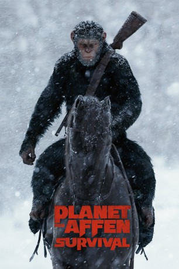

#7318 Planet der Affen: Survival
Alternativ: War for the Planet of the Apes
Auszeichnungen: für 1 Oscars nominiert
 
 IMDB-Wertung: 7.5 / 10
IMDB-Wertung: 7.5 / 10  Metascore: 82
Metascore: 82 
Nach den verheerenden Ereignissen in Planet der Affen – Revolution scheint der Krieg zwischen Menschen und Affen unabwendbar. Die Fronten haben sich verhärtet, das Schicksal des gesamten Planeten steht auf dem Spiel. Die Frage ist nur, welche Spezies am Ende den Erball kontrollieren wird. Caesar befindet sich in einem Dilemma, hin- und hergerissen zwischen zwei Welten, die an einer friedlichen Koexistenz offensichtlich nicht interessiert sind. Und dennoch muss Caeser gerade in dieser schweren Zeit, in der Vernunft und Verstand komplett zu versagen drohen, ein starker Anführer sein, der eine noch größere Katastrophe verhindert.
Jahr: 2017
Dauer: 140 Minuten
FSK: 12
Land: USA Studio: 20th Century FoxTonspuren:
Untertitel: Deutsch, Englisch,
Auflösung: 1080p (1920x800) Größe: 12288 MB
Genre: Action, Thriller, Drama, Sci-Fi, Abenteuer
Regisseur: Matt Reeves
Drehbuch: Mark Bomback
Soundtrack:
Darsteller:
 Andy Serkis als Caesar
Andy Serkis als Caesar Woody Harrelson als The Colonel
Woody Harrelson als The Colonel Steve Zahn als Bad Ape
Steve Zahn als Bad Ape Karin Konoval als Maurice
Karin Konoval als Maurice- Amiah Miller als Nova
 Terry Notary als Rocket
Terry Notary als Rocket Ty Olsson als Red Donkey
Ty Olsson als Red Donkey Michael Adamthwaite als Luca
Michael Adamthwaite als Luca Toby Kebbell als Koba
Toby Kebbell als Koba- Gabriel Chavarria als Preacher
 Judy Greer als Cornelia
Judy Greer als Cornelia- Sara Canning als Lake
- Devyn Dalton als Cornelius
 Aleks Paunovic als Winter
Aleks Paunovic als Winter Alessandro Juliani als Spear
Alessandro Juliani als Spear- Max Lloyd-Jones als Blue Eyes
 Timothy Webber als Ape Elder
Timothy Webber als Ape Elder Lauro Chartrand als Look Out Ape
Lauro Chartrand als Look Out Ape- Shaun Omaid als Soldier Who Sees Ape
 Roger Cross als Captain
Roger Cross als Captain- Mercedes de la Zerda als Lang
- James Pizzinato als Captured Soldier
- Chad Rook als Boyle
 Dean Redman als Commanding Officer
Dean Redman als Commanding Officer- Steve Baran als Tanker Guard
- Sandy Robson als Gunner
- Levi Meaden als Soldier
- Billy Wickman als Gasping Soldier
- Albert Nicholas als Tower Guard #1
- Thomas Potter als Platoon Leader
- Mathew Yanagiya als Executive Officer's Man
- Andrew Alexander Reeves als Ape Kid #7
- Michael Germant als Campfire Soldier , uncredited
- Paul Larouche als Enemy Soldier , uncredited
- Rhys Williams als Alpha Omega Soldier , uncredited
- Doug Chapman als Alpha Omega Deserter
- Kyle Horton als Tower Guard #2
- Paul Luongo als Ukulele Playing Soldier
- Skye Notary als Ape Kid #1
- Willow Notary als Ape Kid #2
- Finn Notary als Ape Kid #3
- Phoenix Notary als Ape Kid #4
- Sadie Aperlo als Ape Kid #5
- Matilda Aperlo als Ape Kid #6
- Kent R. Karemaker als Soldier , uncredited
- Martin Lo Rimorin als Prison Soldier , uncredited
- Tanner Scott als Soldier , uncredited
- Sarah Ziolkowski als Soldier , uncredited
Datei: X:\7+mehr(A-Z)\Planet der Affen\Planet der Affen Survival (2017, FSK12, 1920x800).mkv seit 16.10.2017
Festplatte: HD Collection-7+mehr(A-Z)+Person
 Es gibt insgesamt 14 Filme in der Gruppe '7+mehr(A-Z)\Planet der Affen'
Es gibt insgesamt 14 Filme in der Gruppe '7+mehr(A-Z)\Planet der Affen'